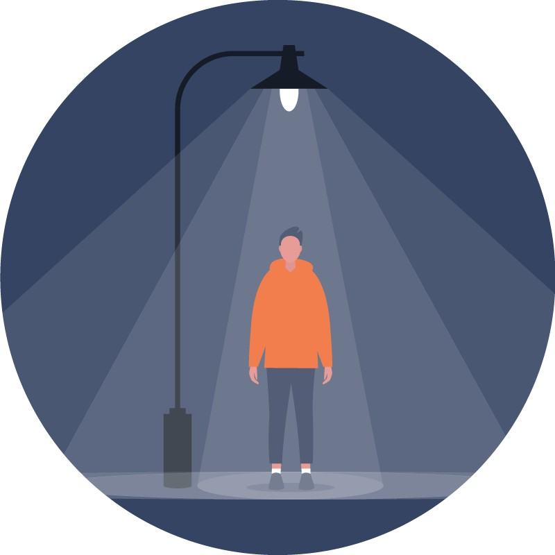

天文观测科学价值
银河、星云、流星雨这些目标只在暗夜中可见。城市夜空被人造光抬亮后，它们从多数人的视野中消失，专业台址也被迫迁往更偏远的地点。
「暗夜保护」这个词容易被误解成把灯全关掉。实际不是。
需要区分三件事：
暗夜保护保护的是第三件事：不是消灭光，是让光回到它该去的地方，把不该有的光收回来。
因为暗夜是一种会被消耗掉的资源。
它不像空气或水那样可以自我恢复。一片夜空一旦被人造光抬亮，只要灯还亮着，它就回不去。而灯一旦装上，往往几十年不会再拆。城市扩张与照明升级是两个持续进行的过程，光污染因此倾向于单向累积。
另一方面，暗夜又不是不可逆的。关掉光源，影响当晚即消失——这是它与其他污染最大的区别，也是保护工作有意义的前提。

暗夜保护的对象不是「星星」，而是围绕暗夜的一整套价值：
银河、星云、流星雨这些目标只在暗夜中可见。城市夜空被人造光抬亮后，它们从多数人的视野中消失，专业台址也被迫迁往更偏远的地点。
夜间照明干扰候鸟迁徙、吸引并杀死昆虫、改变夜行动物的觅食与移动。许多物种的行为与繁殖依赖黑暗这个条件本身。
星空是人类定位自身的方式之一。方向、季节、时间长期依赖对天空的观察。失去银河，意味着这一层经验从日常变为需要专程前往才能获得。
三者不是并列选项，而是同一件事的三个侧面。一片被保护下来的暗夜，同时满足这三者。
暗夜保护在实践中通常分为几个层次，从个人到制度：
四个层次互相依赖：没有制度，改造无法持续；没有公众，制度缺乏推动力。
提到暗夜保护，多数人想到的是远离城市的国家公园、荒野或保护区。城市似乎是这个话题的对立面。
但城市里有两点不容忽视：
第一，绝大多数人住在城市。如果暗夜保护只发生在无人区，那么它保护的是一处景观，而不是公众的体验。对城市居民而言，「远方有一片保护区」和「我家附近看不到星星」是可以同时成立的两件事。
第二，城市里的暗夜是有等级差别的。并非所有城区都同样明亮。公园、湿地、未开发地块、低入住率的新区，都可能保有一段相对更暗的夜空。这些地方的价值不在于「够不够黑」，而在于它是否可达。
这正是国际暗夜协会设立「城市暗夜地点」（Urban Night Sky Place）的思路：承认城市无法拥有真正的暗夜，但仍然可以留存一段可信的夜间体验。

不是。保护的对象是不必要的、方向错误的、时间过长的光。安全照明、功能照明的必要性从未被否定，被质疑的是把光送向天空的那一部分。
不是。生态影响、健康影响与能源成本与所有人相关，天文只是其中最容易被看见的一项。
不准确。城市的夜空有等级差别，可达的暗处确实存在——只是它往往不够暗，也不会自己持续下去。需要有人去测量它、指出它、并让它被写进规定里。